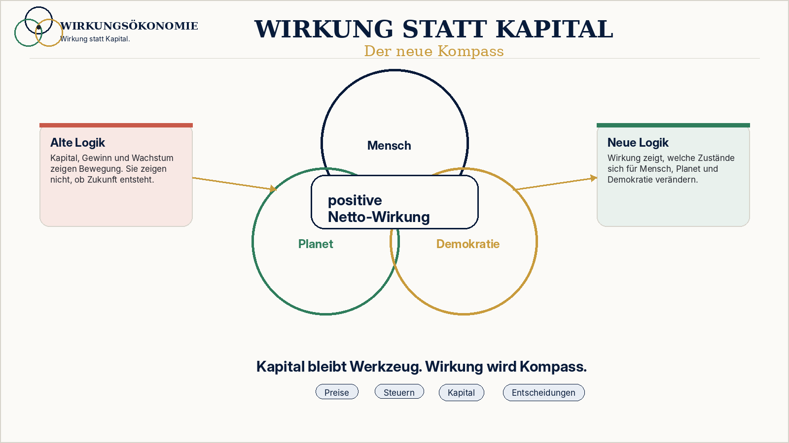
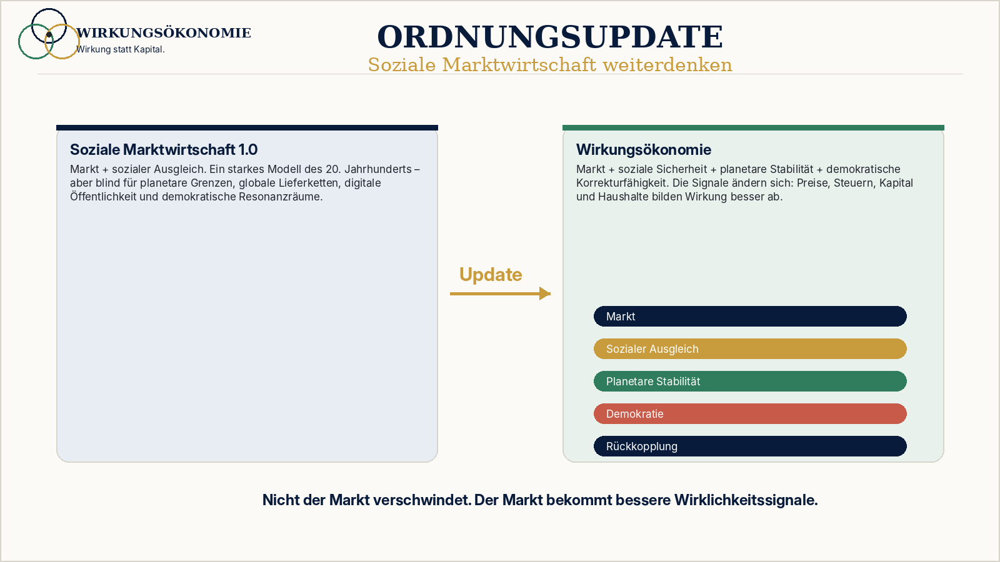

Was bleibt
Markt, Freiheit, Eigentum, Wettbewerb, Gewinn, Innovation, Kapital und unternehmerische Entscheidung.
 Wirkungsökonomie
Wirkungsökonomie
Ordnungsupdate
Warum Markt, Freiheit, Eigentum und Wettbewerb bleiben - aber bessere Signale brauchen.
Die Wirkungsökonomie ist keine Abschaffung der Marktwirtschaft. Sie ist eine Weiterentwicklung der Sozialen Marktwirtschaft für eine Welt, in der Klima, Biodiversität, globale Lieferketten, digitale Öffentlichkeit, Automatisierung, Kapitalmärkte und demokratische Stabilität miteinander verbunden sind.
Nicht der Markt ist das Problem. Das Problem sind Preise, Steuern und Kapitalflüsse, die Wirkung nicht abbilden.
Kernlogik
Kapital, Markt, Wettbewerb, Eigentum, Gewinn, Innovation und dezentrale Entscheidungen bleiben erhalten. Aber sie werden an Wirkung zurückgebunden.

Markt, Freiheit, Eigentum, Wettbewerb, Gewinn, Innovation, Kapital und unternehmerische Entscheidung.
Preise, Steuern, Kapitalzugang, Beschaffung und öffentliche Haushalte bilden Wirkung besser ab.
Eine Wirkungsordnung: bessere Daten, bessere Preise, bessere Rückkopplung, weniger Reparaturbürokratie.
Leitformel
Die Soziale Marktwirtschaft verband Markt und sozialen Ausgleich. Die Wirkungsökonomie verbindet Markt, soziale Sicherheit, planetare Stabilität und demokratische Korrekturfähigkeit.

Schädliche Wirkung darf nicht länger billig bleiben. Positive Netto-Wirkung muss sich lohnen. Wirkung muss in Preise, Steuern, Kapital, öffentliche Haushalte, Beschaffung, Medien und politische Entscheidungen zurückgekoppelt werden.
WÖk in 5 Entkräftungen
Nein. Markt, Eigentum, Wettbewerb, Gewinn und dezentrale Entscheidung bleiben. Die WÖk verbessert die Signale.
Nein. Der Maßstab sind SDGs, Agenda 2030 und SDG+. Das ist ein global verhandelter Referenzrahmen, kein Parteiprogramm.
Nein. Wirkung wird über Daten, Standards, Scorecards, WÖk-IDs und Rückkopplung operationalisiert.
Nicht zwangsläufig. Schlechte Datenpflichten erzeugen Bürokratie. Gemeinsame Wirkungsstandards können Bürokratie reduzieren.
Nein. Es verbessert Entscheidungsgrundlagen. Freiheit auf falschen Preisen und unsichtbaren Schäden ist keine echte Freiheit.
Themenraum
Die WÖk bricht nicht mit der Sozialen Marktwirtschaft. Sie aktualisiert ihren Ordnungsauftrag.
Demokratische Parteien müssen nicht dieselben Antworten geben, können aber Wirkung als Maßstab teilen.
Faktenchecks prüfen Inhalte. Wirkungsanalysen zeigen Folgen.